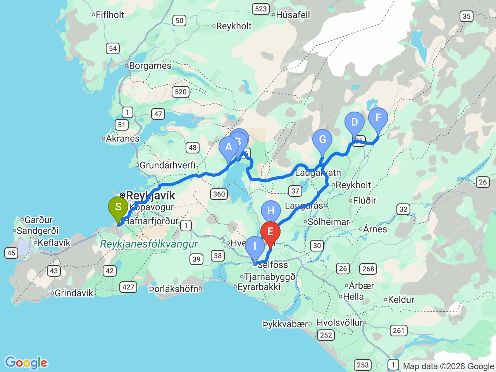

Day 07 · 2026-08-22（六）
冰島環島 Day 2/11
黃金圈一日遊：辛格維利爾・蓋歇爾・黃金瀑布
冰島最經典的環狀路線，一次串聯板塊裂谷、間歇泉與瀑布三大地標

行程明細DAY 07
| 時間 | 地點 | 地點 (英文) | 價格 | 預計停留(小時) | 備註 |
|---|---|---|---|---|---|
| 08:30 | 飯店出發 | 建議提早出發，避開遊覽車人潮 | |||
| 09:20 | Þingvellir 國家公園 | Thingvellir National Park | 停車約1,000 ISK | 1.5 | 可健行遊客中心步道，眺望板塊裂谷 |
| 10:50 | 法律石 | Law Rock | 0.25 | 位於辛格韋德利國家公園內，步行即可抵達 | |
| 11:05 | Öxarárfoss 瀑布 | Öxarárfoss Waterfall | 0.5 | 位於辛格韋德利國家公園內，步行往返約1.5公里 | |
| 12:20 | Geysir 間歇泉地熱區 | Geysir Geothermal Area | 停車約1,000 ISK | 1 | Strokkur 間歇泉約每6–8分鐘噴發一次 |
| 13:35 | Gullfoss 黃金瀑布 | Gullfoss Waterfall | 停車費視季節而定 | 1 | 上下兩層觀景台，建議都走走看 |
| 15:00 | 藍色秘境瀑布（布阿佛斯） | Brúarfoss Waterfall | 1.25 | 含步行至瀑布時間，視停車位置而定，路況較偏僻建議留意 | |
| 16:50 | 火口湖（凱瑞茲火山口湖） | Kerið Crater | 0.5 | 可沿火山口環繞步道及湖邊步道遊覽 | |
| 17:45 | Selfoss Bónus 超市 | Bónus Supermarket (Selfoss) | 0.5 | 建議採買隔日早餐、零食及補給品 | |
| 18:10 | 返回 Country Dream 民宿 | 車程約10分鐘 | 已在 Selfoss 補給，回程路程短 | ||
| 晚上 | 民宿周邊晚餐 |
每日三餐
早餐
午餐
晚餐
未安排
Selfoss 或民宿周邊晚餐，餐廳尚未確認
住宿資訊
Country Dream - Langholt 2
📍 Country Dream - Langholt 2早餐公共廚房
Check-in15:00
房價USD$157
訂房代碼07xxxxx
電話0912345678
這是備註這是備註這是備註
本日預估開車里程
192km
Country Dream（Selfoss）→ Þingvellir 49km → Geysir 60km → Gullfoss 10km → Brúarfoss 15km → Kerið 35km → Selfoss Bónus 16km → Country Dream 7km（含新增的黃金圈延伸路線，部分路段為概估）
該區域加油站
- N1 Hringbraut市中心（出發前，如從雷克雅維克方向來）
- N1 Self-service, Laugarvatn黃金圈路線中段